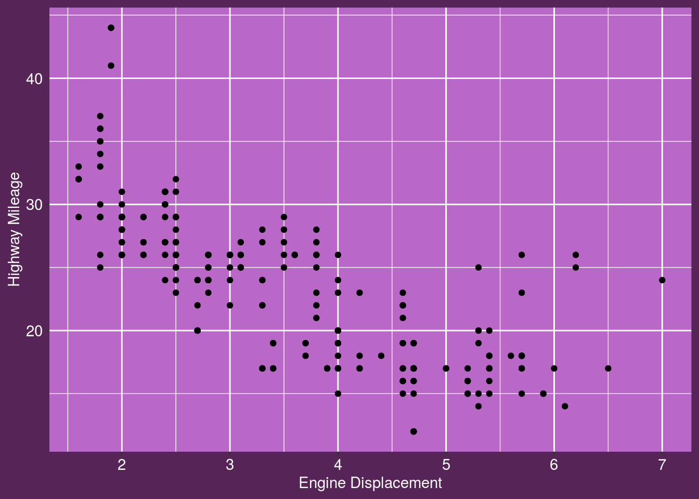

Using R Markdown
by Stringr Belle, 31 Mar 2020
this section is written in markdown. it is used primarily for discussion, explanation etc. first let’s load our packages
library(tidyverse)
library(slumdown)this would usually be about waffles, but instead i will do something boring with cars and the mpg data frame. oh and i will also illutrate the use of inline R coomands 7
pic <- ggplot(data = mpg) +
geom_point(mapping = aes(x = displ, y = hwy)) +
theme_slum(palette = "kunoichi") +
xlab("Engine Displacement") +
ylab("Highway Mileage")this chunk has created the pic variable. to draw the plot, we just include the R command print(pic)
